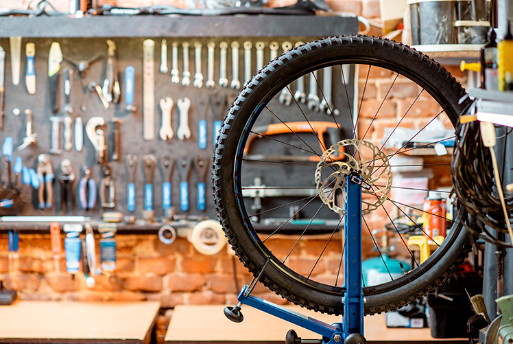
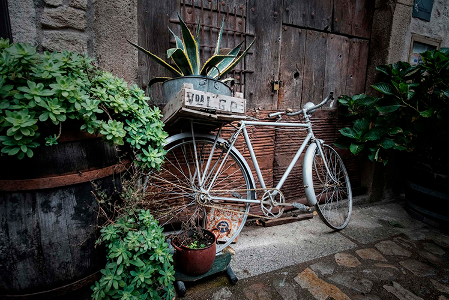

Acerca de Geco bikes
Bicis Geco surge de una iniciativa familiar en la que ponemos en práctica uno de los pasatiempos que más nos gusta,el uso y el mantenimiento de la bicicleta. En esta última etapa de cambios la cultura del ciclismo aumenta y nos incentiva a utilizar la bici cada vez más para diferentes actividades y eso trae aparejadoconocer este hermoso vehículo más en profundidad, y esto quiere decir no solo tener las ruedas infladas para poder dar un vuelta o hacer las compras.Necesitamos confiar en nuestra bicicleta, saber de su funcionamiento y hasta dónde es capaz de llevarte, eso mismo es lo que queremos acercarte desde Bicis Geco y esto no quiere decir que gastes muchisima plata en una bicicleta nueva de la cual no tenes idea de sus componentes, queremos demostrarte que depende el uso que vayas darle muchas veces puedes simplemente reutilizar una bicicleta que seguramente tengas abandonada en tu casa y volverla a la vida, conocer algunas reglas básicas de uso, aprender lo básico de su funcionamiento, la vida útil de sus componentes y asi poder tener una buena experiencia para que no te pase de abandonarla despues de el primer pinchazo.
Al introducirse en el mundo de la bici te vas a dar cuenta de que esta misma se amolda a tus necesidades y notaras que hay un mundo muy apasionante.